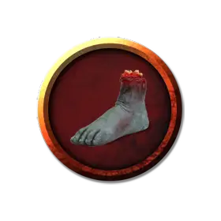

Топающая нога
Stomping Foot
Крошечная Нежить, нейтрально-злая

Класс Доспеха 12
Хиты 2 (1к4)
Скорость 30 футов
| мод | спас | ||
|---|---|---|---|
| СИЛ | 13 | +1 | +1 |
| ЛОВ | 14 | +2 | +2 |
| ТЕЛ | 11 | +0 | +0 |
| мод | спас | ||
|---|---|---|---|
| ИНТ | 5 | −3 | −3 |
| МДР | 10 | +0 | +0 |
| ХАР | 4 | −3 | −3 |
Иммунитет к урону яд
Иммунитет к состояниям очарование, истощение, отравление
Чувства слепое зрение 30 футов (слеп за пределами этого радиуса), пассивное Восприятие 10
Языки Понимает Общий, но не говорит.
Опасность 0
Бонус мастерства +2
Особенности
Иммунитет к изгнанию. Нога обладает иммунитетом к эффектам, изгоняющим нежить.
Природа нежити. Топающая нога не нуждается в воздухе, еде, питье и сне.
Действия
Топот. Рукопашная атака оружием: +3 к попаданию, досягаемость 5 футов, одна цель. Попадание: 3 (1к4 + 1) дробящего урона.